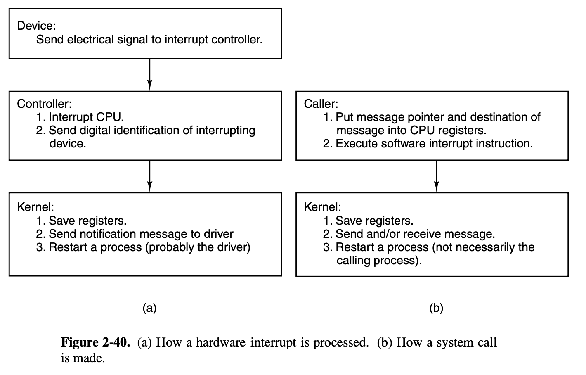
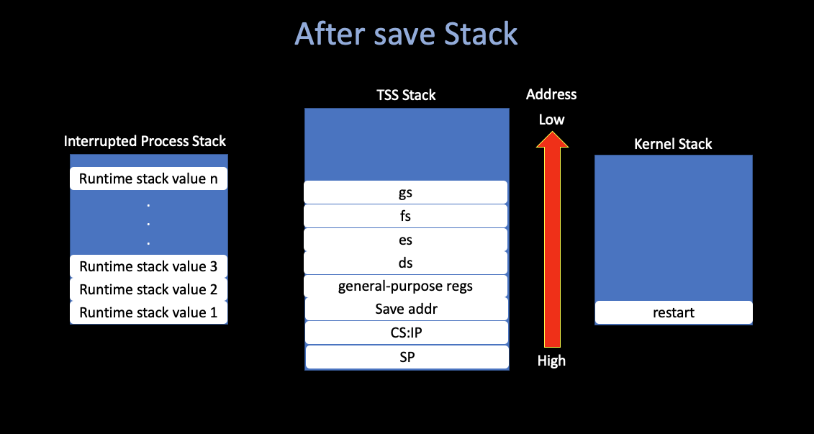

Operating Systems Design and Implementation Notes
Interrupt Inplementation in Minix3
By Jiawei Wang
This note is an extra part of prev OSDI 6. Interrupt. If you want to understand how MINIX 3 works at the lowest level, perhaps the most important thing is to understand how exceptions, hardware interrupts, or int instructions lead to the execution of the various pieces of code that has been written to service them.

1. TSS
i. Real Mode VS. Protect Mode
Real Mode
- Early Computers, Small Storage
- CS:IP -> Physical Address
Physical Address = CS << 4 + IP- Security Issue: Hackers can access any part of storiage by setting CS:IP register
Protected Mode
- 3 Types of Addresses:
- Logical Address
- Used by program
- (
segment reg(cs, ss, ds...) + offset (ip, sp...))
- Virtual Address
- An 32-bit unsigned integer
- Represent 4GB address
- Physical Address
- OS -> Passing to RAM address
- Logical Address

- Detect Error (Segmentation Error)
- Access Large Amount of Memory Effectively
ii. GDT
- Global Descriptor Table.
- Each Processor can only have one GDT.
- Store the segment descriptor
iii. TSS
- Task State Segment.
- TSS Descriptor is Stored in GDT
- Key to Understand Interrupt

The task-switching mechanism of a 32-bit Intel processor is complex (handle interrupt). If you do not understand the "hidden" work in TSS, it is hard to figure out what happends.
When the CPU receives an interrupt while running a process, it sets up a new stack for use during the interrupt service.
The location of this stack is determined by an entry in the Task State Segment (TSS).
The new stack created by an interrupt always starts at the end of the stackframe_s structure within the process table entry of the interrupted process.
The CPU automatically pushes several key registers onto this new stack, including those necessary to reinstate the interrupted process’ own stack and restore its program counter. When the interrupt handler code starts running, it uses this area in the process table as its stack. and much of the information needed to return to the interrupted process will have already been stored. The interrupt handler pushes the contents of additional registers, filling the stackframe, and then switches to a stack provided by the kernel while it does whatever must be done to service the interrupt.
Nothing is stored on the interrupted process’ working stack when a user process is interrupted!
Furthermore, because the stack is created in a known location (determined by the TSS) after an interrupt, control of multiple processes is simplified.

2. Runtime
i. Hardware Interrupt
Using Clock interrupt as an hardware interrupt example

Please make sure that you've read OSDI 4. Inside a Whole Clocktick, to follow the following contents:

hwint_master
/*===========================================================================*/
/* hwint00 - 07 */
/*===========================================================================*/
/* Note this is a macro, it just looks like a subroutine. */
#define hwint_master(irq) \
call save /* save interrupted process state */;\
push $irq ;\
call irq_handle /* irq_handle(irq) */;\
pop %ecx ;\
movb $END_OF_INT, %al ;\
outb $INT_CTL /* reenable master 8259 */;\
ret /* restart (another) process */
/* Each of these entry points is an expansion of the hwint_master macro */
.balign 16
hwint00:
/* Interrupt routine for irq 0 (the clock). */
hwint_master(0)
save
!*===========================================================================*
!* save *
!*===========================================================================*
! Save for protected mode.
! This is much simpler than for 8086 mode, because the stack already points
! into the process table, or has already been switched to the kernel stack.
.align 16
save:
cld ! set direction flag to a known value
pushad ! save "general" registers
o16 push ds ! save ds
o16 push es ! save es
o16 push fs ! save fs
o16 push gs ! save gs
mov dx, ss ! ss is kernel data segment
mov ds, dx ! load rest of kernel segments
mov es, dx ! kernel does not use fs, gs
mov eax, esp ! prepare to return
incb (_k_reenter) ! from -1 if not reentering
jnz set_restart1 ! stack is already kernel stack
mov esp, k_stktop
push _restart ! build return address for int handler
xor ebp, ebp ! for stacktrace
jmp RETADR-P_STACKBASE(eax)
.align 4
set_restart1:
push restart1
jmp RETADR-P_STACKBASE(eax)

restart
!*===========================================================================*
!* restart *
!*===========================================================================*
_restart:
! Restart the current process or the next process if it is set.
cmp (_next_ptr), 0 ! see if another process is scheduled
jz 0f
mov eax, (_next_ptr)
mov (_proc_ptr), eax ! schedule new process
mov (_next_ptr), 0
0: mov esp, (_proc_ptr) ! will assume P_STACKBASE == 0
lldt P_LDT_SEL(esp) ! enable process' segment descriptors
lea eax, P_STACKTOP(esp) ! arrange for next interrupt
mov (_tss+TSS3_S_SP0), eax ! to save state in process table
restart1:
decb (_k_reenter)
o16 pop gs
o16 pop fs
o16 pop es
o16 pop ds
popad
add esp, 4 ! skip return adr
iretd ! continue process